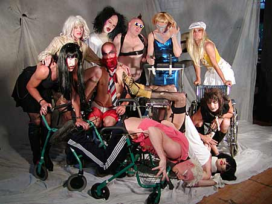
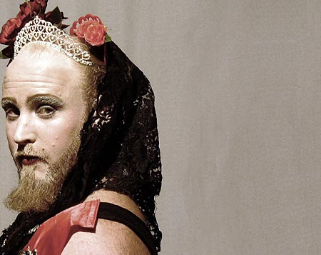

| 11. Februar 2005 |
| i B Y E N |

PR-foto: Daisy Løvendahl/dunst
Foreningen dunst blev stiftet i 2001 som et mødested og forum for outsider-homoer, freakede lesbiske, trashede bøsse-transvestitter og andre aparte homoseksuelle. Miss Fish og Dennis Agerblad, som vi har talt med, kan ses med hvid pageparyk til venstre og i blåskinnende kjole til højre.
På gensyn fistfucking
De homoseksuelle originaler i foreningen Dunst har de sidste fire år haft succes med at pumpe rock'n roll, trashede drag-performances og - bogstaveligt talt - pis og lort ind i det danske homo-miljø. Nu trænger de til at drikke en kom usnd chai-te med publikum.
Homo-fænomen
Af Erik Hansen
Med Dunsts shows ved man aldrig. "Jeg har for eksempel fået
et blowjob af Knud Vesterskov (Dunst-medlem og pornofilmsinstruktør)
lige midt på dansegulvet på Rust", fortæller dunst
medlemmet og performeren Dennis Agerblad. Der var også engang, hvor
der var en, som sked på scenen. Shows med tis er ret almindelige.
"Det her skal du også lige se" siger han og finder en
video-fil frem på sin computer.
Et tungt technobeat buldrer af sted. På skærmen ser man en
mand klædt ud som en gigantisk puddelhund ligge på et rullebord.
Dunst-drag'en Puta løfter halen og stikker hånden helt op
i numsen.
"Derefter trak han både bord og puddelhund rundt på scenen-
det var ret fantastisk!".
Rundt om computeren i Agerblads lille lejlighed i Indre By står
drag vennerne Miss Fish og Tina Trash og griner ad video sekvensen. Trash
i øvrigt i fuldt ornat - dvs. pink paryk, netstrømper, stiletter
og kridt i hele hovedet.
Alle tre er medlemmer af foreningen Dunst. Stiftet i 2001 som et mødested
og forum for outsider-homoer, freakede lesbiske, trashede bøsse-transvestitter
og andre aparte homoseksuelle. En slags homo-social, seksualpolitisk varmestue
for minoriteterne i minoriteten, der dækker udgifterne til leje
af lokale osv. ved at holde fester, samtidig med at de her kan manifestere
sig og vise, hvem de er. Dunst tæller i dag ca. 75 medlemmer, og
festerne er blevet tilløbsstykker. Da Dunst senest i December afholdt
et arrangement, queer personality cuntesten "Hr og Fru dunst",
var Ungdomshuset fyldt, 750 mennesker. Scenen lignede i øvrigt
en stro røv, som sked deltagerne ud, og pointene blev givet på
den måde, at dommerne tissede dem i nogle flasker.
"Det dunst gør, er, at vi kradser i overfladen", forklarer
Miss Fish, eller Jørgen Callesen, som han hedder, når han
er i civil.

PR-foto: dunst.
Princess Hans
Den store bjørnede, fuldskæggede kleppert af en bøsse,
der som regel har kjole på, kommer lørdag hele vejen fra
New Zealand med sin rock'n'roll acappella-kabaret. -
"Dem, der har status og indflydelse i homomiljøet, har integreret
og socialiseret sig efter en helt normal heteroseksuel livsstil og norm.
De mennesker, som jeg synes er spændende, og som har fundet deres
helt egen livsstil ved for eksempel at være transvestitter eller
leve tre bøsser sammen, er fuldstændig marginaliserede. De
er freaks og trash og virkelig lavt nede på den social rangstige
- også inden for homomiljøet. Det er alle de typer, vi har
fået samlet i Dunst. Og det viser sig nu, at når vi samler
de kræfter, kan vi noget. Homomiljøet herhjemme er pænt,
glat og glad for Melodi Grand Prix og disco. Jeg synes, at det er lykkedes
for Dunst at få noget rock'n roll ind - noget punk, noget trash
og noget rå energi".
Chai og neglelak
Med "Stille aften med dunst" vil foreningen nu også
gerne vise en anden side af sig selv. I stedet for fest, fistfucking og
farver er opgaven her at skabe den mere familiære og community-stemning,
som medlemmerne oplever, når de hver tirsdag i Galebevægelsens
lokaler på Frederiksberg har deres eget ugentlige møde. Og
at dele denne stemning med publikum. Atmosfæren skal ifølge
Fish, Trash og Agerblad være en blanding af "jazz-tilbage-i-tiden-agtig"
og "20'erne-cabaret-voltaire på den radikale og ekspressionistiske
måde". Ud over jazz band har dunst inviteret Princess Hans
hele vejen fra New Zealand. En stor, bjørnet, fuldskægget
kleppert af en bøsse, der som regel har kjole på, når
han går på scenenmed sin rock'n'roll-a cappella-kabaret.
De lover faktisk, at det bliver en stille aften. Med madrasser på
gulvet, røgelse og en bar med chai-te med urteekstrakt, ingefær
og lakridsrod, som dunst-medlemmet Ulle-Dulle har stået og kogt
med en thailandsk kone hjemme i sit køkken. Foreningens dj-trup,
der blandt andre består af Minimal Martin og Djuna Barnes, har "ned-rytme"-plader
med. Nå, ja - og så laver dunsts performance gruppe et show.
Bare på et par timer. Præcis hvad der kommer til at ske i
showet, vil Fish, Trash og Agerblad ikke ud med. Men stikord er drag-kings
og -queens, masser af kostumer, neglelakperformance, spoken word, homo-viser
og ballade(r). Og så sikkert meget, meget mere. For med dunsts shows
ved man jo aldrig.
ibyenpol.dk
"Stille aften med dunst" løber af stablen i morgen 12.februar
i Ungdomshuset, Jagtvej 69, Nørrebro. Dørene åbnes
kl. 21. Arrangementet starter klokken 22 og varer til "sent".
Alle er velkomne. Entre 50 kr.
www.dunst.dk
Print denne side